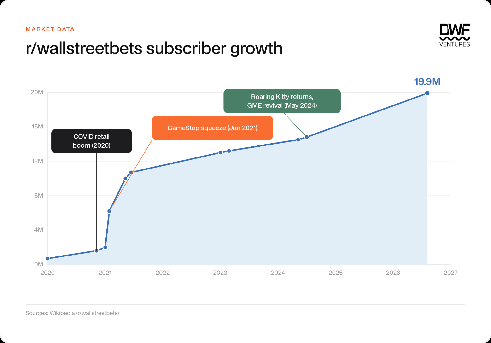
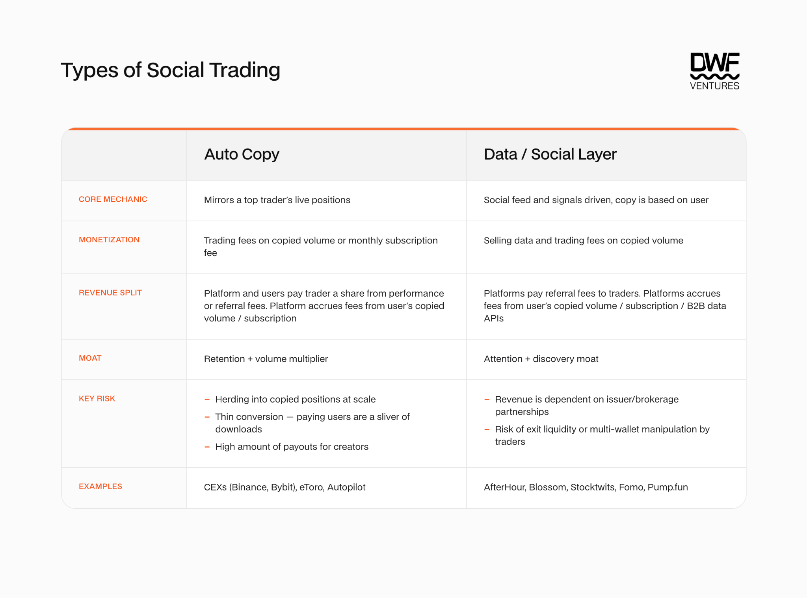
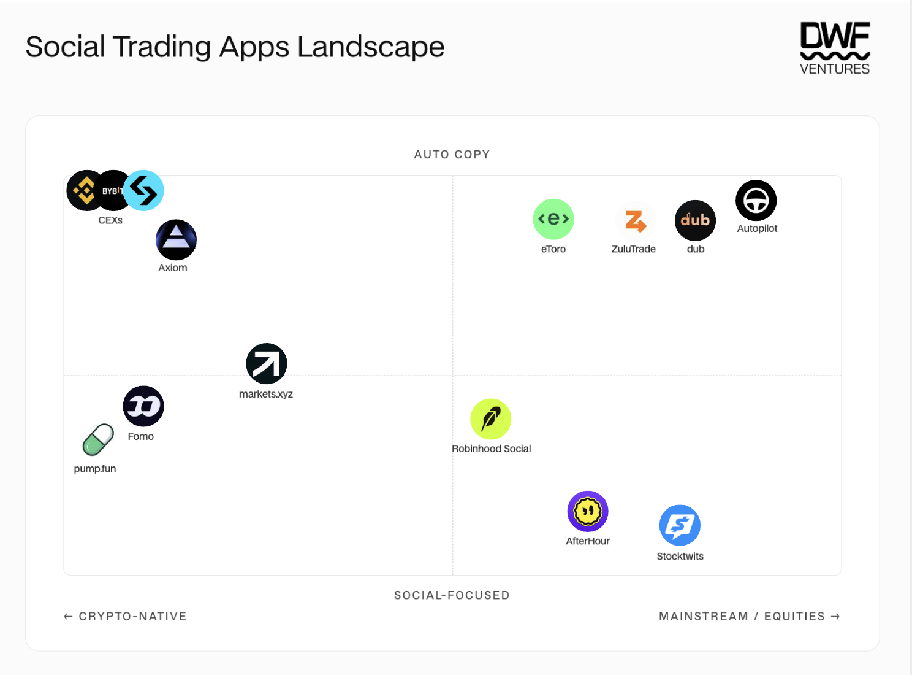
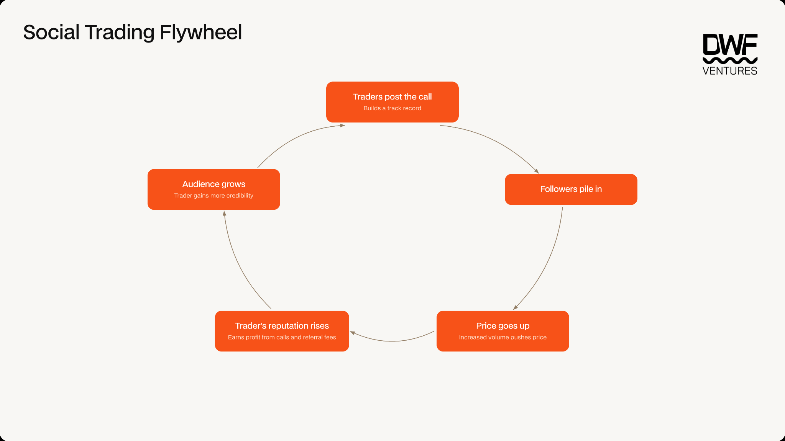

Key Takeaways:
Social trading has exploded due to human psychology driving user behavior. Platforms provide a one-click interface for users seeking validation from others in their trades, which has led to a flywheel growth effect.
With trading fees racing to zero across platforms, competitive advantage now comes from network effects, trader relationships, and proprietary information layers.
The flywheel growth effect is a double-edged sword. Traders build reputations from public calls that are partly self-fulfilling, since followers piling in moves the price in the trader's favor, introducing both growth and risk at once.
There are many risks present, and results show that the majority of users on these platforms lose money. Information asymmetry and volatility will always remain, putting new users at significant disadvantages.
We live in a world where connection is at our fingertips. That connection is at the core of humans' desires and drives our behaviour in an increasingly connected world. Humans seek out others for cues and validation, which has seeped into our financial choices as well. Reinforced shared beliefs of a group can be incredibly powerful in moving prices, which has led to the boom and bust cycles of different markets across time. This has led to the growing thesis that social trading will become the next frontier to onboard the masses into the financial trading arena.
In this article, we dive deeper into the different types of social trading, how platforms are competing and the risks that users should be aware of.
The Evolution of Social Trading
The earliest iterations of social trading can be traced back to the advent of copy trading on brokerages. Top traders are highlighted based on their PnL and users can choose to replicate their portfolio based on real-time movements. eToro pioneered this automated feature, which made investing much more accessible to the masses as they could tap into an experienced trader's expertise with just one click. The product was highly successful, with signups to eToro increasing by over 50–100% across Europe and Australia. This would highly boost revenue streams too, as volume growth on the platform would be double of whatever expert traders do multiplied by the number of users that copy them. It is estimated that over 40% of users were actively using the copy feature, signaling a strong use case.
As investing has become more democratized, social communities where traders discuss ideas have flourished alongside it. The exponential growth of online communities such as r/WallStreetBets and Stocktwits reflects the demand for such information flows. Attention has demonstrated its ability to translate into financial value. The GameStop squeeze in 2021 was highly reflective of this, as analysis showed strong correlation between Reddit activity, trading volume and price action. Subscriber growth exploded during that period and has continued to grow over the years, serving as a source-of-truth terminal for many retail investors.

r/wallstreetbets subscriber growth (Source: Wikipedia)
More recently, we see it in the form of social growth on Twitter for specific traders. Serenity was a prominent profile in the AI/semiconductor space and called many trades publicly that went on to make outsized returns. This boosted his following from a few hundred in July 2025 to over 1 million by August 2026. This shows that such information flows remain highly valuable.
However, problems quickly surfaced as anyone can claim to hold a position without verifiability. That gap gave rise to apps that aggregated these features into a single platform. An example is AfterHour, which allows users to link their social profiles to their brokerage accounts, so any position they post is provable and followers get real-time signals whenever a trade is opened or closed. The key distinction is that users now choose which individual trades to follow, rather than handing control to an automated bot that mirrors an entire portfolio. This is similar to the on-chain dynamic, where wallets can be tracked to verify traders' positions and attributed to a persona through social networks like Twitter where traders share their thoughts publicly.

Types of social trading: auto copy vs. data / social layer
The image below also shows the landscape of current social trading apps. Most are concentrated towards serving either the crypto or mainstream equities crowd, but we believe that will converge in the future as well.

Social trading apps landscape
GTM Strategies
Amidst the rapid growth of such apps, GTM strategies used by platforms have been evolving over time. Since trading can be commoditized across platforms, they often compete in a race to zero fees. Therefore, moats are now built on network effects, exclusivity and the ability to reach the masses through messaging. Strategies can be broken down into two main categories — lowering friction for normies, and incentives-focused onboarding.
To tap into the burgeoning retail crowd, apps have to differentiate based on providing novel information or reducing friction. An example of this was the Pelosi Tracker launched by Chris Josephs in 2022, tracking politicians' positions publicly. It grew viral with its unique meme-able hook, being informative and straightforward even for beginners. Pelosi's positions generated high profile returns, attracting significant attention and eventually growing into the Autopilot app which provides easy mirroring of prominent political figures' portfolios within users' brokerages. Ease of onboarding is also key as one-click experiences make the process seamless enough to be attractive for first time users. Abstraction — from creating wallets just to trade crypto assets, to bypassing multi-step deposit processes through Apple Pay integrations in-app — has greatly improved user experience and adds to onboarding new users easily.
Incentives-focused onboarding usually involves bringing on high profile traders on socials to attract their existing followers to migrate onto trading platforms. Incentives are often given through fee rebates or trading competitions to entice users. The competitive element includes social signaling and allows traders to build up their reputation and attract more followers, culminating in a reinforcing flywheel. Incentives are significant acquisition costs for platforms, but with the introduction of social elements, it adds stickiness to the product and deepens its moat as a discovery layer that is proprietary depending on agreements with notable traders.
The Flywheel & Caveats
Social trading has evolved significantly since the start — from being a gateway for beginners to get exposed to trading, to becoming a reputation-based entertainment arena. Users seek out a trusted "expert" or the crowd to offload their burden of owning their trading decisions, with their belief being validated as they see others pile into the same positions. With each win, the process is reinforced as newer users are enticed to jump into the mix, creating a flywheel that greatly benefits traders on social trading platforms. Traders can easily build a track record from public calls that are somewhat self-fulfilling as users follow in on their trades. They can achieve quick feedback loops which grow their audience further and incentivize them to make more calls. The relationship between the user and trader feeds into each other, allowing social trading platforms to grow exponentially once they establish some user base.

The social trading flywheel
However, as trading becomes more accessible, it exposes new users to risks that they are often not aware of. The performance data on Fomo presents a grim picture: most traders lose money, as only 6.16% of 292k wallets analyzed on the platform were profitable in the last 3 months based on realized profits. Even among profitable wallets, net profits exceeding $10k were limited to only 25 wallets. This brings rise to the structural conflict of interest between traders and followers, where the former can easily use the latter as 'exit liquidity'. Since followers enter trades without an independent thesis of their own, it also introduces significant volatility through herd behaviour. As followers pile in, price movements become extremely inflated, which also unwinds as sharply when traders eventually exit their positions. Transparency is also a key issue as having verifiable positions can give a false sense of security. Traders can have undisclosed multi-wallet positions to front run their publicly trackable wallet, giving rise to the same issue of information asymmetry that transparency was supposed to eliminate.
Overall
Social trading is the financial expression of the need for validation from others, which will only continue to grow in the digital era we live in. As execution becomes commoditized across platforms, the real moat lies in whoever owns discovery and distribution. The flywheel driving this growth has been highly successful, but also poses a negative implication for users in asymmetric risk and herd-driven volatility.
We believe that the platforms that endure will be those that are able to grow their social layer proprietarily through providing novel information, and will eventually dominate the market through network effects. As the line between trading and entertainment blurs, we believe that social-led platforms will gain the most traction in comparison to platforms just simply layering on some social features.